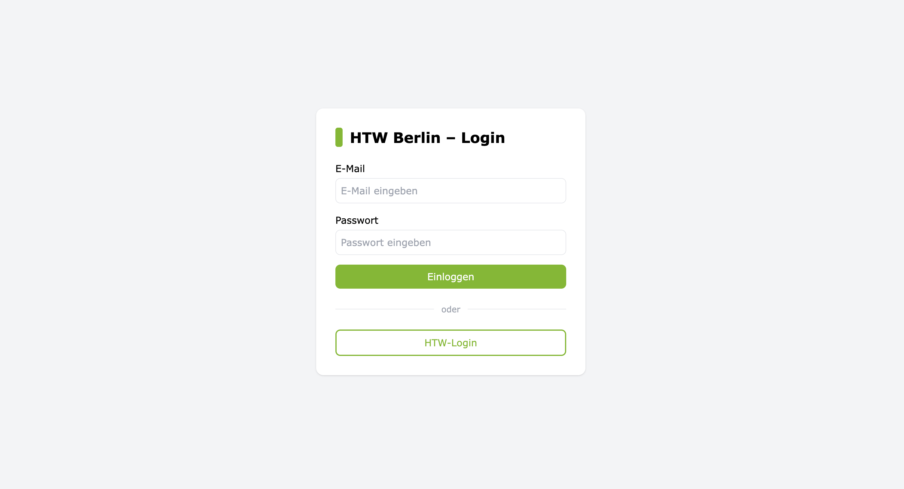
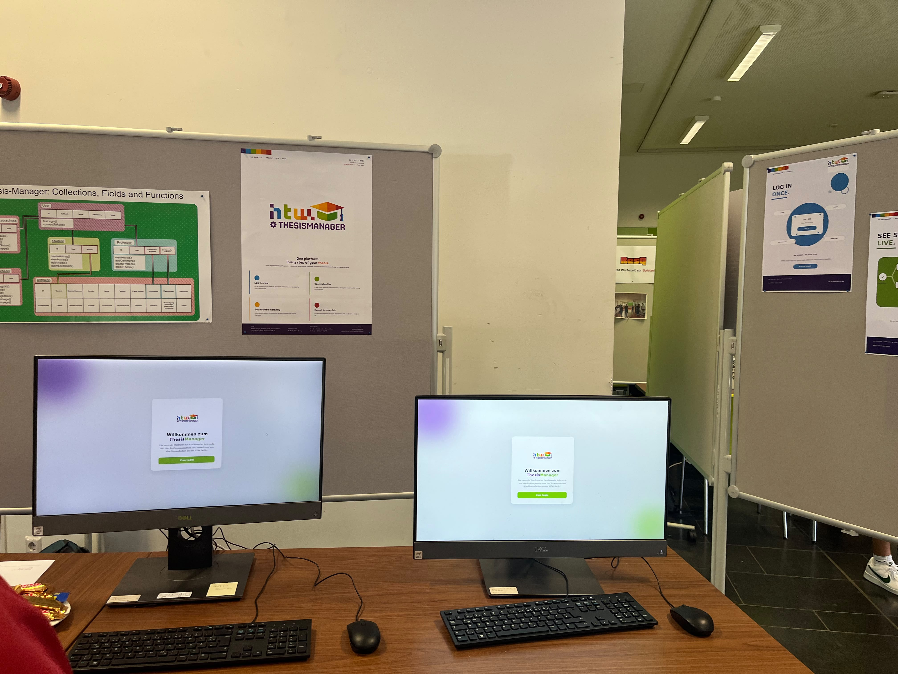
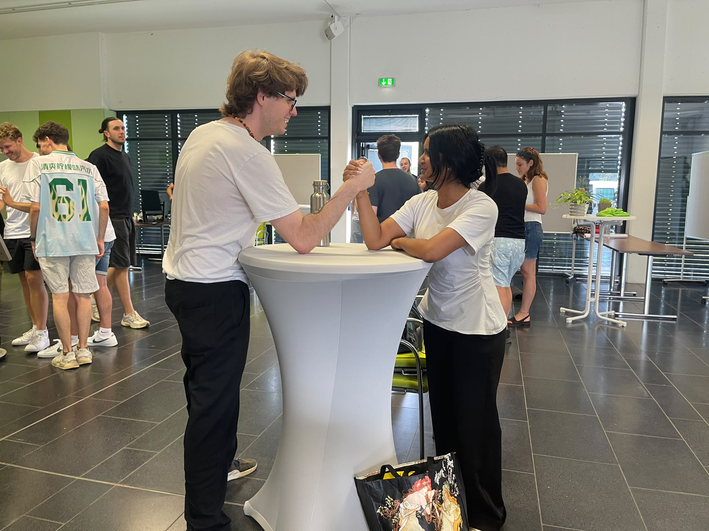
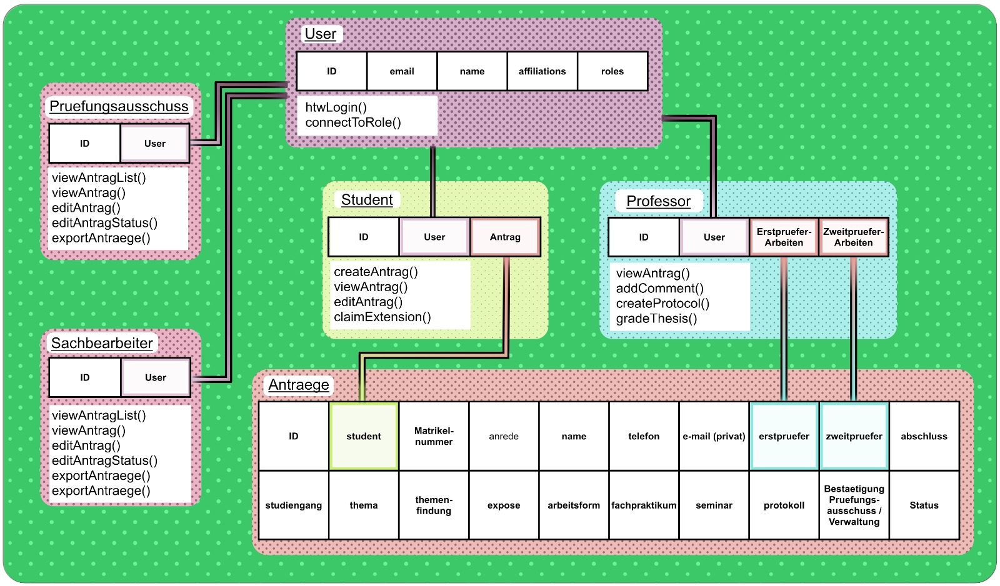

تطبيق ويب متكامل
Thesis Manager
منصة واحدة لإدارة الأطروحات في جامعة HTW برلين، تربط الطلاب والممتحنين ولجنة الامتحانات وفريق الإدارة من التقديم حتى الدفاع.
نظرة عامة
تمر الأطروحة بأربعة أطراف: الطالب، والممتحِن، ولجنة الامتحانات، والإدارة، ويعمل كل طرف من مكان مختلف. يضع Thesis Manager الجميع على السجل نفسه، فتصبح حالة الأطروحة شيئاً تراه بدلاً من أن تسأل عنه.
أبرز الميزات
تسجيل دخول موحد واستيراد بيانات HTW
يسجل المستخدمون الدخول بحساب HTW الخاص بهم، وتأتي بيانات جامعتهم معهم.
توجيه ذكي حسب الدور
يحدد التطبيق دور المستخدم عند تسجيل الدخول ويرسله إلى لوحة التحكم المخصصة له.
لوحات تحكم حسب الدور
بطاقات بدلاً من الجداول الطويلة، ويرى كل دور الأعمال التي يملكها فقط.
إشعارات تلقائية
بريد إلكتروني عند تغيّر الحالة أو وصول طلب جديد، فلا أحد يحتاج إلى متابعة النظام يدوياً.
توليد ملفات PDF
نماذج وسجلات الدفاع تُنشأ من بيانات موجودة في النظام.
تصدير Excel
تصدّر الإدارة بيانات الطلبات لإعداد التقارير خارج المنصة.
في IMI Showtime
عُرض المشروع مباشرة في معرض مشاريع IMI بجامعة HTW برلين.



مثال على المخرجات
نموذج طلب أنشأته المنصة، وهو أحد الملفات التي يحمّلها الطلاب مباشرة من لوحة التحكم.
فتح في نافذة جديدة ←
مساهمتي
- تطوير ميزات متكامل عبر واجهة Vue 3 وخلفية PocketBase
- توليد ملفات PDF باستخدام jsPDF لنماذج الطلبات وسجلات الدفاع
- تصدير Excel باستخدام SheetJS للتقارير الإدارية
- الاختبار عبر التطبيق
المكدس التقني
الواجهة الأمامية
الخلفية والمصادقة
المستندات والبنية التحتية
البنية
خمسة أدوار ونموذج بيانات واحد، يقرأ كل منها سجل الطلب نفسه ويكتب فيه أثناء انتقاله عبر سير العمل.

التحديات
01
تسجيل الدخول الموحد لـ HTW
يمر تسجيل الدخول عبر مزوّد هوية الجامعة، وكان ربط الهوية المُعادة بأربعة أدوار شرطاً أساسياً لكل ما يليه.
02
تنسيق الخادم الافتراضي وCI/CD
احتاج الأمر إلى إعداد طويل ليتفق خط البناء والحاوية وخادم افتراضي تستضيفه الجامعة، في بيئة لا نتحكم فيها. ومتى استقر الأمر، توقف النشر عن طلب الانتباه.
03
اختبار المستخدمين
الاختبار مع طلاب وممتحنين حقيقيين غيّر لوحات التحكم أكثر مما فعلت نقاشاتنا الداخلية.
مهتم بالمشروع؟
التطبيق متاح حالياً في جامعة HTW برلين.